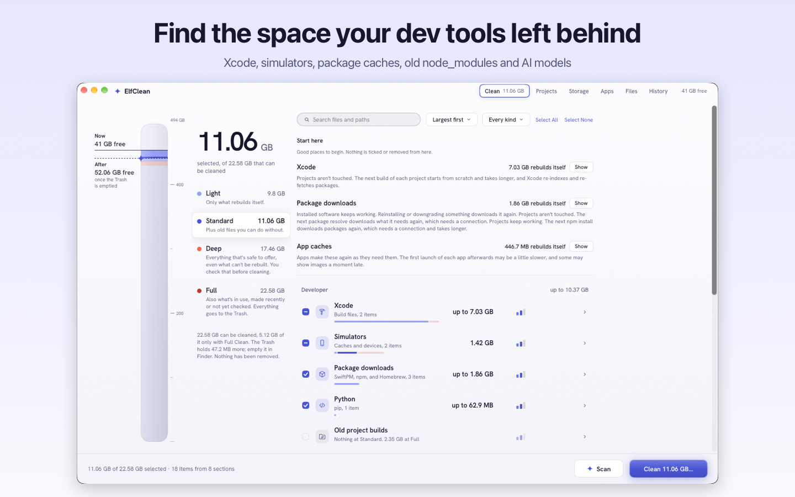
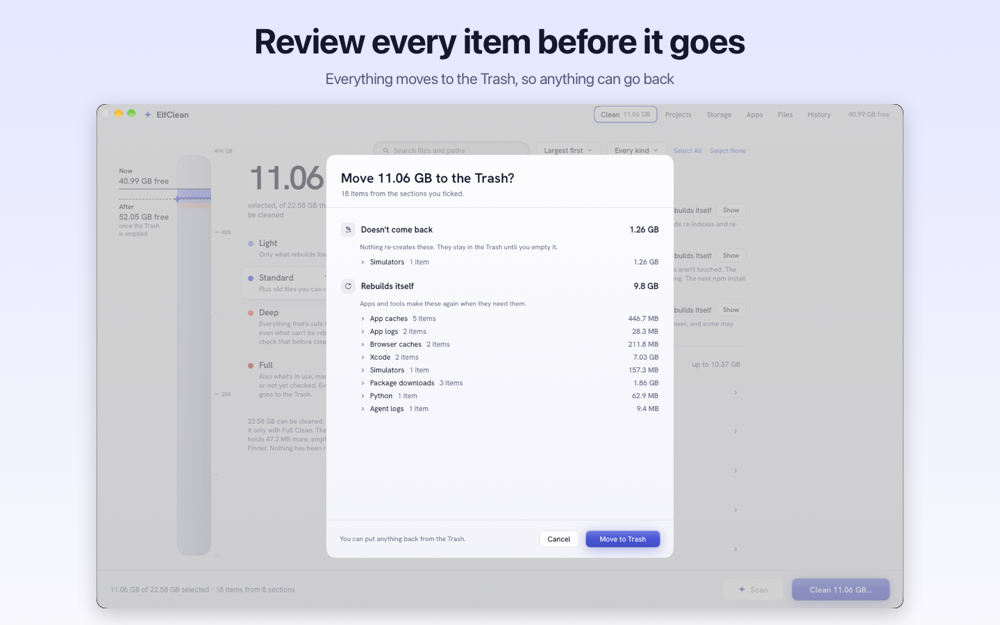

Find the space your dev tools left behind
Xcode DerivedData, simulators, package caches, old node_modules, AI models and agent worktrees. Review every item; everything goes to the Trash first.

What it finds
Xcode and simulators
DerivedData, archives, device support and simulator devices, with the runtime each device uses.
Project build folders
node_modules, .next, .build, Rust target, uv .venv and Pods in projects you haven't touched for a while. Recent projects start unticked; Full Clean includes them only after its warning and review confirmation.
Package caches
npm, pnpm, Yarn, Bun, pip, uv, Poetry, Cargo, Go, Gradle, CocoaPods, Swift packages and Homebrew.
AI models and agents
Ollama and Hugging Face models, shared layers counted once. Claude Code and Codex history and the git worktrees agents leave behind.
Everyday clutter
App caches and logs, old downloads, browser caches and leftovers from apps you deleted, in plain language.
Where space went
A storage map of your home folder, large files with Quick Look, and duplicates found byte for byte.

Careful by design
- You review every item. Nothing moves until you've seen what it is, what removing it changes and how to get it back.
- The Trash first. Items go to the Trash by default; History records where each came from. Space is freed when you empty the Trash.
- Git-aware. A repository or worktree with uncommitted or unpushed work is never ticked for you, and is re-checked just before removal.
- Hands off. Mail, Keychains, Photos, iCloud Drive, cloud drives and anything outside your home folder are never touched.
- Honest numbers. No "speeds up your Mac", no health score: just measured sizes.
One purchase
Pay once
The App Store shows the price in your currency, including any launch offer. Scanning, the storage map, previews, History, removing an app and cleaning one item at a time are free. The unlock cleans everything you select in one go, on your Macs and with Family Sharing. No subscription.
Private
Sandboxed and sold through the Mac App Store. No accounts, analytics or telemetry; nothing about your files leaves your Mac.